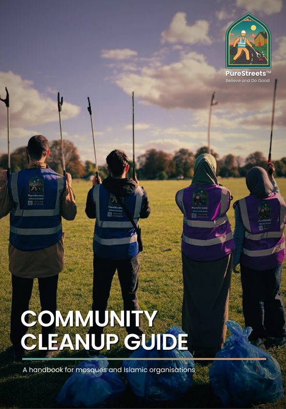

Mosques
PureStreets supports mosques looking to run regular litter picks by providing a free starter litter-picking pack, practical guidance, and a free consultation to help you get started.
How we help mosques
We make it easier for your mosque to plan, promote and repeat local clean-ups by giving you practical support at each stage.


Organising handbook

Free starter pack

Promotion support

Media and design support
Step 1
Fill in the contact form
Tell us a little about your mosque, your local area and the kind of litter pick you are hoping to organise.
Tell us about your Mosque
Step 2
Read the free handbook while we get back to you
While our team reviews your request, you can use the handbook to start thinking about routes, volunteer briefings, equipment and safety.
Open the guide
Step 3
We get back to you and arrange a consultation
Our team will contact you to understand what your mosque needs, answer questions and arrange a practical consultation session.
Step 4
Receive the support package
Once we know what your mosque needs, we provide the practical support that makes regular litter picks easier to organise, promote and repeat. This may include:
Consultation sessions
Plan your first litter pick, shape a simple process and understand how to get started.
Organising handbook
Extra guidance on routes, volunteer briefings, safety, timings and running a smooth pick.
Free starter pack
Eligible mosques can receive litter pickers and gloves, plus guidance on requesting extra equipment.
Promotion support
Help sharing your clean-up through social media and WhatsApp so your community knows how to join.
Media and design support
Support with posters, social media graphics and simple video editing to help your event feel polished.